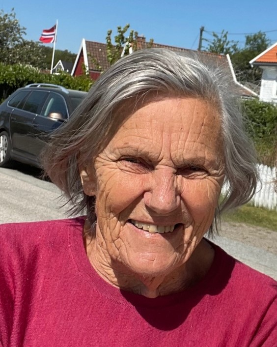

Doris Hansen født Nilsen 25. aug. 1932 i Kristiansand sovnet stille inn 3. februar på Ternevig omsorgssenter. Hun tok artium på Katedralskolen i 1951 og studentfaglinjen på Handelsgymnasiet i 1952. Deretter hadde hun en variert kontorkarriere bl.a. fra Madlaleiren, Reber Heis, Samskipnaden i Trondheim, Forsvaret på Møvig og bank før hun kom til oss som startet opp Agder distriktshøgskole i august 1969. Alt i 1956 giftet hun seg med Rogalendingen Tor Johan Hansen, siv. Ing. NTH, som etter hvert gjorde karriere som adm. dir. for Kristiansands Mek. Verksted. De fikk øye for hverandre på felles Kristenrusstreff i Sandnes, og vi hadde gleden av at de når de kunne, troppet opp på de etter hvert årlige jubileumsruss- treffene på restaurant Pider Ro på Fiskebrygga i Kristiansand.
Doris var enebarn og ønsket seg mange barn. Fem ble det: Toril, Inger, Bjørg, Torstein, Sigrid og 12 barnebarn og 13 oldebarn. Doris og Tor- hjemmet var i Steinkleiva og på Hamreheia og fra 1967 på Andøya nær KMVs nye dokk. Der bor Tor ennå og arrangerte samling av hele familien etter Doris begravelse fra Voie kirke 18. februar. De var en aktiv familie med turer til fots og på ski til hytta på Åpåsdal og bil- og båtturer i inn- og utland. Hus i Spania har de også hatt i 30 år og Doris gikk spanskkurs og arrangerte julelunsjer og var medlem av Kirkerådet for Sjømannskirken i 8 år. I Voie kirke hadde hun fartstid i menighetsråd, kirkering og bibelgruppe. Da hennes gamle foreldre bodde på sykehjem i hele 10 år, besøkte hun dem daglig når hun var hjemme. Unison sang av Lina Sandels mest kjente sanger med akkompagnement av Reidar Skaaland gav høystemthet til de mange fremmøttes avskjed med vårt gode medmenneske Doris Hansen som forlot oss etter et godt og langt liv.

Thor Einar Hanisch em. UiA